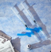

The New York Times
CNN's Cuomo coundrum: A star anchor with a brother in trouble
Bloomberg Opinion
Thinking about getting a booster? Read this first.

Covid-19
Covid-19: News and updates from Massachusetts
Dovid-20
Dovid-20: News and updates from Massachusetts